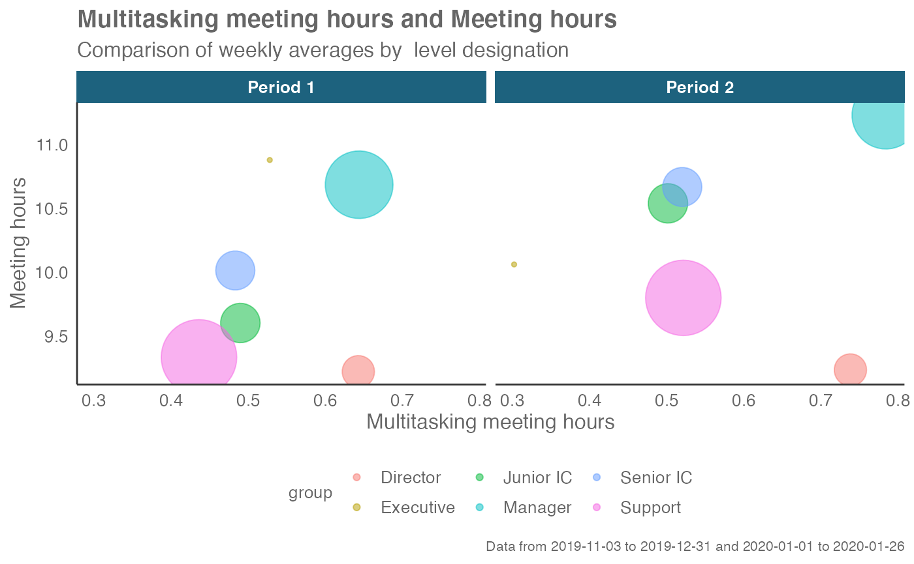

R/create_period_scatter.R
create_period_scatter.RdReturns two side-by-side scatter plots representing two selected metrics, using colour to map an HR attribute and size to represent number of employees. Returns a faceted scatter plot by default, with additional options to return a summary table.
create_period_scatter( data, hrvar = "Organization", metric_x = "Multitasking_meeting_hours", metric_y = "Meeting_hours", before_start = min(as.Date(data$Date, "%m/%d/%Y")), before_end, after_start = as.Date(before_end) + 1, after_end = max(as.Date(data$Date, "%m/%d/%Y")), before_label = "Period 1", after_label = "Period 2", mingroup = 5, return = "plot" )
| data | A Standard Person Query dataset in the form of a data frame. |
|---|---|
| hrvar | HR Variable by which to split metrics. Accepts a character vector, defaults to "Organization" but accepts any character vector, e.g. "LevelDesignation" |
| metric_x | Character string containing the name of the metric, e.g. "Collaboration_hours" |
| metric_y | Character string containing the name of the metric, e.g. "Collaboration_hours" |
| before_start | Start date of "before" time period in YYYY-MM-DD |
| before_end | End date of "before" time period in YYYY-MM-DD |
| after_start | Start date of "after" time period in YYYY-MM-DD |
| after_end | End date of "after" time period in YYYY-MM-DD |
| before_label | String to specify a label for the "before" period. Defaults to "Period 1". |
| after_label | String to specify a label for the "after" period. Defaults to "Period 2". |
| mingroup | Numeric value setting the privacy threshold / minimum group size. Defaults to 5. |
| return | Character vector specifying what to return, defaults to "plot". Valid inputs are "plot" and "table". |
This is a general purpose function that powers all the functions in the package that produce faceted scatter plots.
Other Flexible:
create_dist(),
create_fizz(),
create_line_asis(),
create_line(),
create_rank(),
create_stacked(),
create_trend()
# Return plot create_period_scatter(sq_data, hrvar = "LevelDesignation", before_start = "2019-11-03", before_end = "2019-12-31", after_start = "2020-01-01", after_end = "2020-01-26")# Return a summary table create_period_scatter(sq_data, before_end = "2019-12-31", return = "table")#> # A tibble: 30 x 5 #> group Multitasking_meeting_hours Meeting_hours Period n #> <chr> <dbl> <dbl> <chr> <int> #> 1 Biz Dev 0.257 6.82 Period 1 75 #> 2 Customer Service 0.436 8.60 Period 1 61 #> 3 Facilities 0.484 9.08 Period 1 72 #> 4 Finance-Corporate 0.310 8.19 Period 1 68 #> 5 Finance-East 0.789 11.4 Period 1 70 #> 6 Finance-South 0.617 8.91 Period 1 81 #> 7 Finance-West 0.765 10.5 Period 1 73 #> 8 Financial Planning 0.372 8.24 Period 1 75 #> 9 G&A Central 0.572 9.03 Period 1 57 #> 10 G&A East 0.329 7.70 Period 1 65 #> # … with 20 more rows